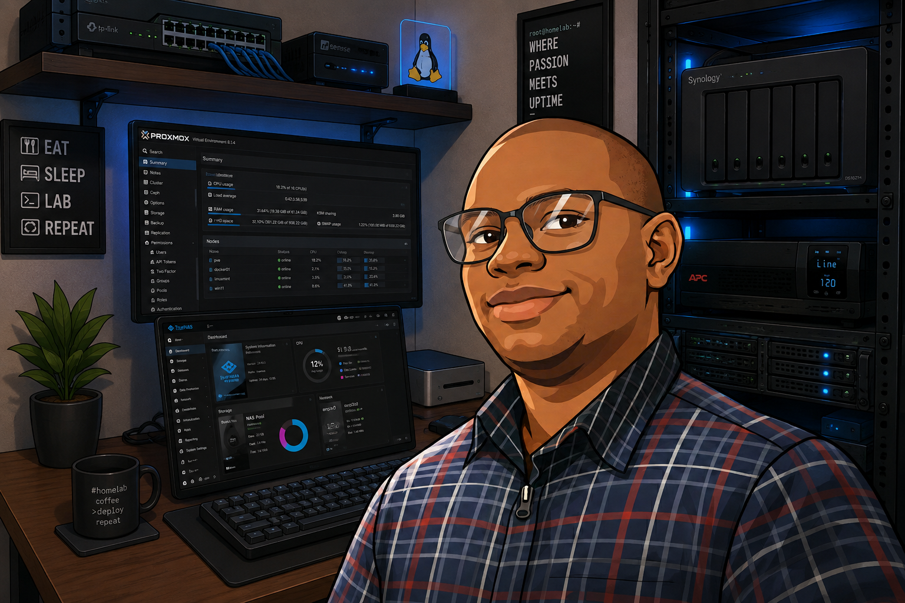

Windows Server
Active Directory, DNS, DHCP, Group Policy and administration.
ABOUT ME
Passionate about designing secure Microsoft infrastructure, building enterprise-ready homelabs, and continuously learning through hands-on experience.

I am a Windows System Administrator with a passion for Microsoft technologies, enterprise infrastructure, virtualization, networking, and PowerShell automation.
My goal is to design secure, scalable, and reliable IT environments while continuously improving my technical knowledge through real-world homelab projects and documentation.
Core technologies and platforms I work with.
Active Directory, DNS, DHCP, Group Policy and administration.
Exchange Online, Entra ID, Intune, Teams.
PowerShell, Windows Terminal, administration scripts.
Hyper-V, VMware, Proxmox, Docker.
My homelab is more than a collection of hardware—it's a practical learning environment where I deploy, test, troubleshoot, and document enterprise technologies before applying best practices in real-world scenarios.
It enables me to explore Windows Server, Microsoft 365, virtualization, networking, storage, backup, and automation in a safe and controlled environment while continually improving my skills.
Interested in Windows infrastructure, Microsoft 365, virtualization, or enterprise IT? I'd love to connect and discuss opportunities, projects, or collaboration.